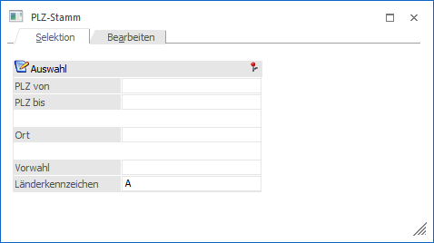
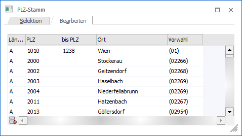
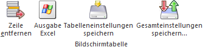
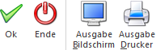

In jedem Feld, in dem eine Postleitzahl bzw. ein Ort eingegeben werden kann, kann durch Drücken der F9-Taste der Postleitzahlen Matchcode aufgerufen werden.
Die Postleitzahlen, Orte, die entsprechenden Vorwahlen und dergleichen können grundsätzlich im Menüpunkt…
1 WinLine START
1 Optionen
1 Postleitzahlen
… gepflegt werden.

Sofern eine Selektion vorgenommen und mit "Ok" bestätigt wurde, wird das Suchergebnis im Register "Bearbeiten" angezeigt:

In diesem Fenster ist eine direkte Bearbeitung der Postleitzahlen oder deren einzelne Löschung möglich.
Tabellenbuttons

Ø Zeile entfernen
Sofern eine Zeile markiert und auf der Button "Zeile entfernen" betätigt wurde, wird die entsprechende Zeile rot markiert. Auf diese Weise können mehrere Zeilen unabhängig voneinander für den Löschvorgang vorgemerkt werden.
Achtung
Bei Drücken des Buttons "Ok" erfolgt keine Löschabfrage. Die markierten PLZ werden ohne Hinweis sofort gelöscht!
Hinweis
So, wie einzelne Zeilen zum Löschen markiert werden können, können auch einzelne Felder in der Tabelle markiert und direkt bearbeitet werden. Die Änderungen werden ebenso ohne erneuten Hinweis übernommen, sobald der OK-Button betätigt wurde.
Ø Ausgabe Excel
Durch Anwahl des Buttons "Ausgabe Excel" wird der Inhalt der Tabelle an Microsoft Excel übergeben.
Ø Tabelleneinstellungen speichern
Die Spalten einer Tabelle können grundsätzlich an beliebige Positionen verschoben, bzw. in der Breite entsprechend angepasst werden. Durch Anwahl des Buttons "Tabelleneinstellungen speichern" werden die Einstellungen benutzerspezifisch gespeichert und bei dem nächsten Aufruf des Programmpunktes wieder vorgeschlagen.
Ø Gesamteinstellungen speichern
Im Gegensatz zu "Tabelleneinstellungen speichern" können mit "Gesamteinstellungen speichern" mehrere Tabellenaufbauten gespeichert und nach Wunsch geladen werden. Zusätzlich werden Sonderfunktionen der Tabelle (z.B. "Spalte gruppieren") ebenfalls bei der Speicherung bedacht.
Buttons

Ø Ok
Durch Anklicken des Buttons "Ok" bzw. der Taste F5 werden, abhängig vom aktuellen Register, folgende Tätigkeiten durchgeführt:
ü Register "Selektion"
Es wird in
das Register "Bearbeiten" gewechselt und die Tabelle, anhand der zuvor
getätigten Selektion, gefüllt.
ü Register "Bearbeiten"
Es werden
alle Änderungen gespeichert und das Fenster geschlossen.
Ø Ende
Durch Anklicken des Buttons "Ende" bzw. der Taste ESC wird das Fenster geschlossen.
Ø Ausgabe Bildschirm
Mit Hilfe des Buttons "Ausgabe Bildschirm" wird die PLZ-Liste am Bildschirm ausgegeben.
Ø Ausgabe Drucker
Durch Anwahl des Buttons "Ausgabe Drucker" wird die Auswertung am Drucker ausgegeben.